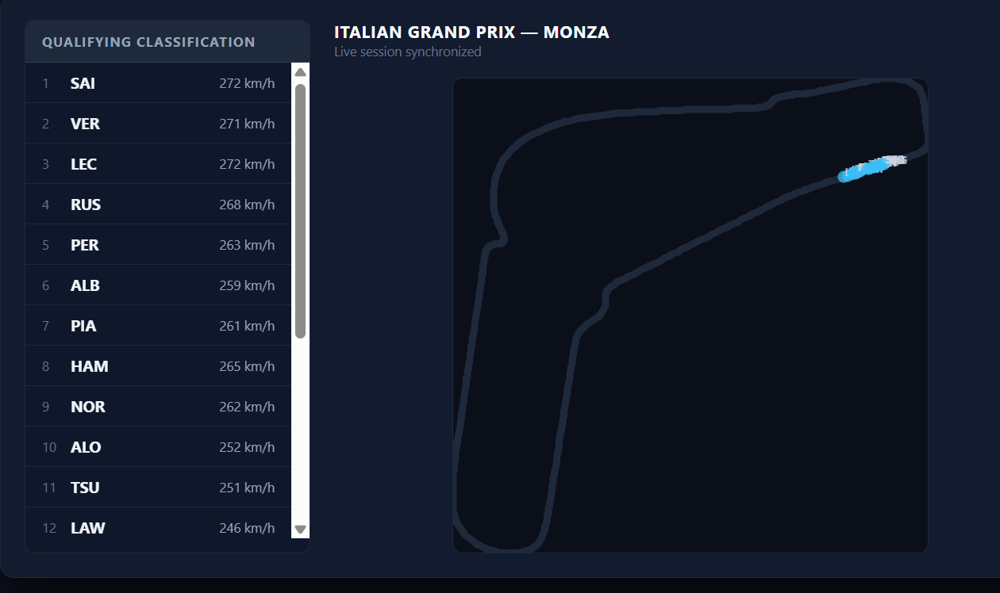
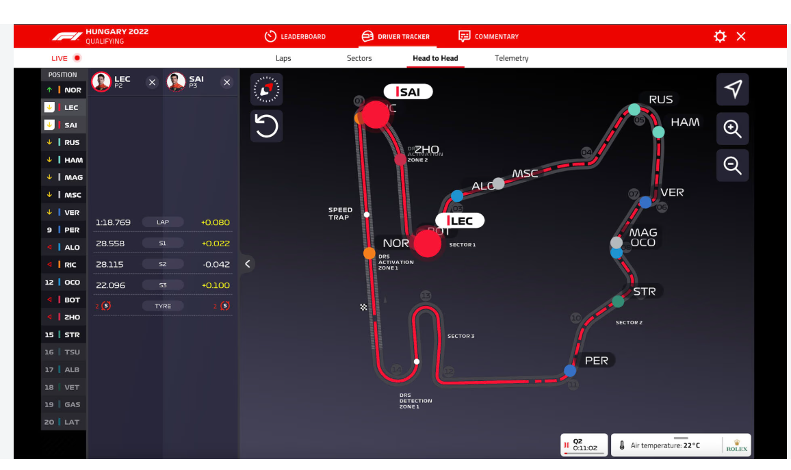

Mid-Week Drop: VibeHack is Live & The F1 Reality Check
September 11, 2026
Guesss whattttttttttttt.
The VibeHack Clinkt Challenge is OFFICIALLY LIVE!
Go check out the problem statement and the raw dataset I just dropped on the website.I don't care what your academic background is—whether you are a tech wizard or a commerce strategist—step into the arena and show me what you've got. The Clinkt Crisis is waiting to be solved. Check it out here.
Yet again… I did exactly what I said I would. 😎😏
Now, before you start cheering, I can already hear some of you mumbling through the screen: “Umm, Swayam… what about that F1 project you promised two weeks ago? 🤨”
Okay, fair point. 😅 Let's talk about it.
I haven't been slacking. In fact, I’ve been banging my head against the keyboard over this project since I published the previous blog. And I actually had a massive breakthrough! I successfully hooked into the OFFICIAL F1 telemetry data using the fastf1 library and simulated the actual 2023 Monza GP.
Here’s a sneak peek of what that looks like:

Now, to a normal person, successfully fetching the actual official F1 telemetry data and simulating 2023 Monza GP might look like a great achievement. But to my goated brain? It’s just not good enough.
Because THIS is what I want it to look like:

Look at that interface! Live driver positioning, real-time sector gaps, head-to-head telemetry—THAT is the level of visual perfection I’m chasing. I don't just want a basic Python script running on my machine; I want to build the go-to hub for F1 fans on race weekends.
And as I started trying to bridge the gap between my crude script and that dream UI, reality hit. Diving into the architecture of those F1 apps sitting on our phones, I realized how insanely complex they actually are.
Here is the harsh reality: I can't keep my poor laptop running 24x7 to host a live tracker, and I definitely don't have the infra to handle heavy traffic spikes when the lights go out on Sunday. I need to host a server or use a heavy-duty cloud-based service.
These architectural experiments led me to try some absolutely unhinged, crazy stuff this week. The result? I paid the ultimate price. My laptop literally flatlined and lay completely dead for 5 hours straight. 😅😭
But honestly? It just made me more determined.
Because as a legend once said: "You can sleep when you are dead."
So, it’s no longer a matter of 'IF' I get this F1 tracker built and scaled... it’s simply a matter of 'WHEN'.
On that high Verstappen note, enter the VibeHack arena, don't burn out your motherboards, and I'll see you in the next one!
If this chaos somehow resonated with you, go bother a friend with the link.